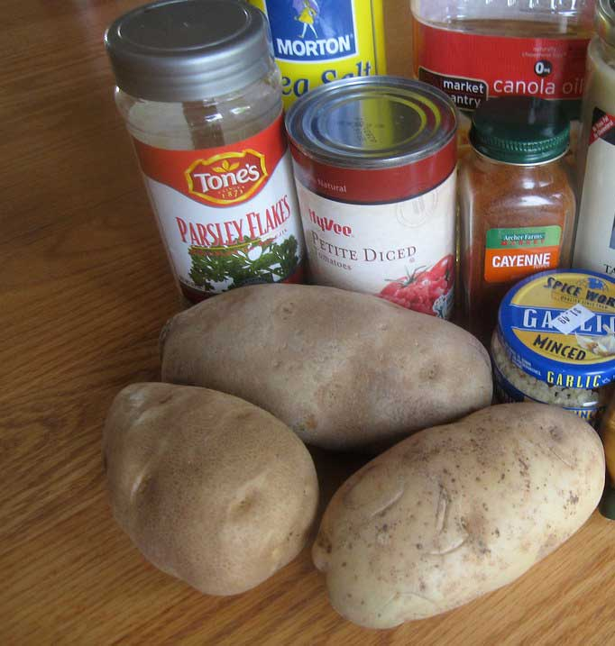
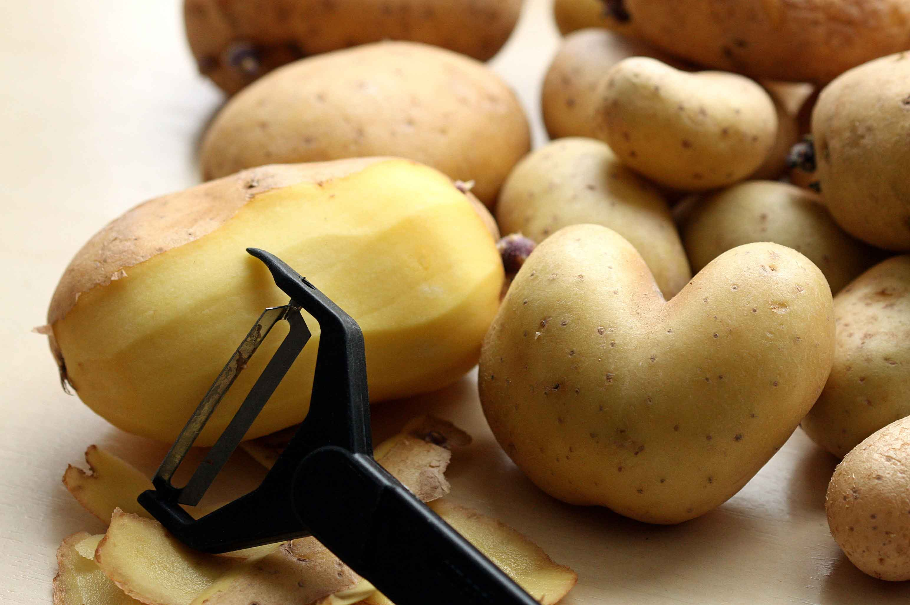
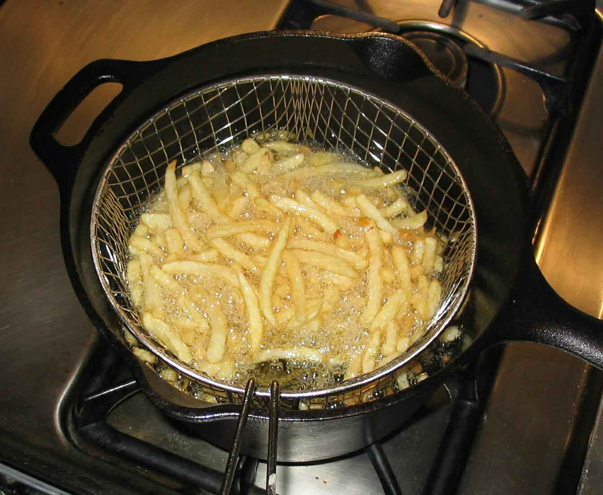
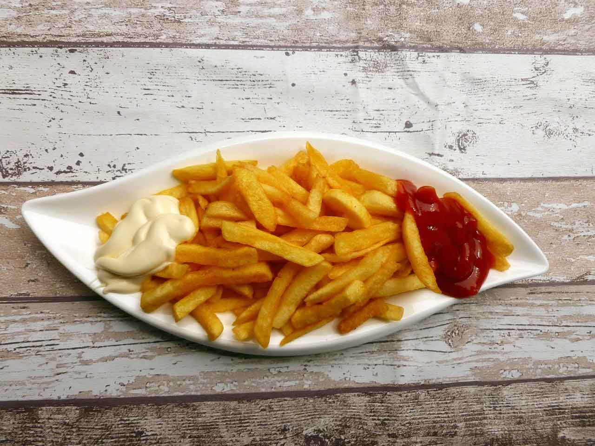

French Fries
Description
French Fries are my favourate food.They’re a low-calorie, any-time snack.French fries make snacking look good. They are easy to eat as well as easy to cook. Thinly sliced potatoes are deep-fried till they're crisp on all sides and then sprinkled with salt, pepper or really any seasoning of your choice.You can have french fries as a side during breakfast, mid-meal or evening snacks with tea.
Ingredients
- 4 large potato
- cold water
- oil
- Tomato Ketchup/Mayonnaise
- ½ tsp chilli powder
- ½ tsp salt
Directions
  - firstly, peel the skin of potato. recommend using maris piper potatoes as they have creamy white flesh and fluffy texture.
- cut into 1 cm thick sticks.
- rinse in ice cold water until the starch runs out clean.
- pat dry in kitchen towel to remove excess moisture.
- now deep fry in hot oil. make sure the oil is approximately 140 degree celcius.
- deep fry for 6 minutes or until the potatoes turn tender. they will not go brown at this stage.
- drain off over kitchen towel and cool completely. if you are looking to freeze the potatoes, then you can freeze the fries in zip lock bag upto 3 months.
- once they are cooled completely, deep fry in hot oil. make sure the oil is approximately 180 degree celcius.
- stir occasionally and fry until it turns golden brown and crisp.
- drain off to remove excess oil.
- now sprinkle ½ tsp chilli powder and ½ tsp salt. mix well.
- finally, enjoy homemade french fries with eggless mayonnaise as an evening snack.